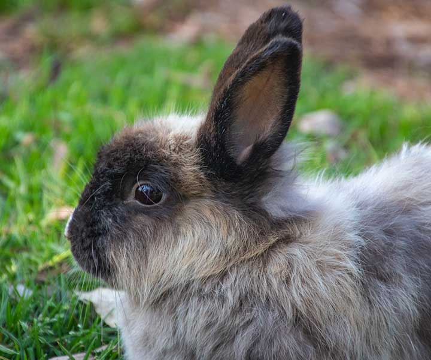
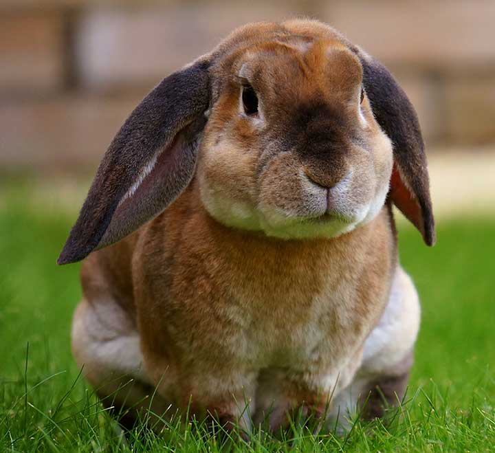

Rabbits for Adoption

Floppy
Floppy enjoys hopping around, eating carrots and snuggling. He is 1 year old, male, neutered and up to date on vaccinations.
Adopt me!

Hoppy
Hoppy is on the lazier side and enjoys lots of snuggling and treats. He is 2 years old, male, neutered and up to date on vaccinations.
Adopt me!Fluffy
Fluffy is a little shy and enjoys some alone time. She is 3 years old, female, spayed and up to date on vaccinations.
Adopt me!Petunia
Petunia enjoys eating lettuce, hopping around in the long grass and falling asleep in your arms. She is 2 years old, female, spayed and up to date on vaccinations.
Adopt me!Winston
Winston enjoys the outdoors, hopping around the house and is fully house trained. He is 1 year old, male, neutered and up to date on vaccinations.
Adopt me!